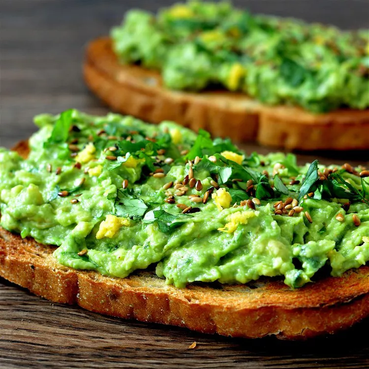

Receta de la tostada de aguacate
Voler a pagina principal

A veces tenemos prisa y necesitamos un platillo rapido de preparar, pero que cubra nuestras necesidades proteicas.
Lista de ingredientes
- 1 rebana de pan tostado
- 1/2 aguacate maduro machacado al gusto
- 1/3 de copa de queso cottage
- Azucar
- 1 cucharada de semillas de girasol o de calabazas tostadas
- 1/2 cucharadita de miel
- 1/8 o pisca de hojuelas de pimiento rojo triturado
- Sal o pimienta al gusto
Pasos a seguir
- Hunte el aguacate machacado al pan recien tostado
- Vierta el queso cottage
- Espolvoree las semillas, la sal o la pimienta y sirvace